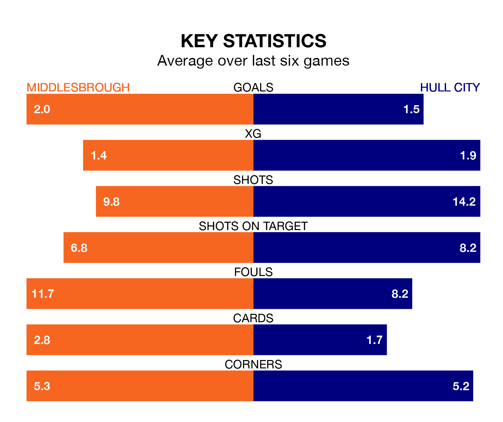

Hull City travel to Middlesbrough on late Wednesday in the Championship.
The visitors come into the game on the back of a defeat in their last match, having lost to Queens Park Rangers 2-0 away.
The Boro also lost their last match, 2-0 against Ipswich Town.
With 31 goals in 20 games so far this season, Middlesbrough are scoring more than average in the league with 1.6 goals per game. But they are conceding more than average too, letting in 31 goals at a rate of 1.6 per game.
Hull, meanwhile, are average scorers, with 1.4 goals per game. They have conceded 1.3 goals per game.
In the last 10 years, Middlesbrough and Hull have played each other on 15 occasions. Middlesbrough won seven of them, Hull six, and they drew twice.
On average, the Boro scored 1.4 goals and the Tigers 1.4 in those matches.
Their last meeting was on April 19, when Middlesbrough won 3-1 at home.
City are eighth in the table after 20 games, of which they have won eight and drawn six, earning 30 points.
The Boro are four places behind the Tigers in 12th, with eight wins and three draws putting them on 27 points.
The hosts are in mixed form in the Championship, with two wins and a draw from their last six games.
And also with two wins and a draw over that period, the away side's form is identical – they have both taken seven points from 18.
Wednesday's match will be refereed by Oliver Langford, who has taken charge of 11 Championship games so far this season, issuing one red card and booking 43 players. He has not awarded any penalties.
The last Middlesbrough game Langford refereed was a 1-0 home win against Leicester City on November 11. His last Hull match was their 2-1 win away at Blackburn Rovers on August 19.
